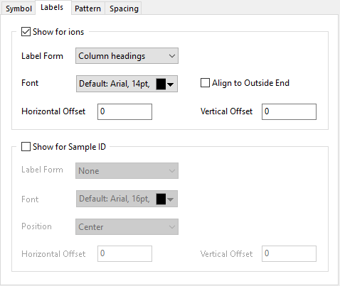

Diese Registerkarte kann verwendet werden, um alle Arten von Beschriftung in einem Stiff-Diagramm zu definieren.

Bedienelemente für die Beschriftung von Ionen.
Legen Sie eine Spaltenbeschriftungszeile fest, um den Ionennamen zu zeigen. Es gibt Knoten, die kombinierte Ionen zeichnen, wie Na⁺ und K⁺, HCO₃⁻ und CO₃⁻. Origin zeigt sie beim Knoten als Na⁺ + K⁺ und HCO₃⁻ + CO₃⁻ an.
Legen Sie die Schriftart und das Format für den Titeltext fest.
Legen Sie fest, ob die Beschriftungen am äußeren Ende ausgerichtet werden.
Per Standard ist die Beschriftungsposition für Kationen links von den Symbolen, für Anionen befindet sie sich rechts von den Symbolen. Wählen Sie dieses Option, um Origin die Beschriftungen für Kationen links und die Beschriftungen für Anionen rechts auszurichten.
Legen Sie den horizontalen Versatz der Beschriftungen von den Knoten (Symbolen) der Polygone fest. Die Einheit dieses Bedienelements ist % der Schrifthöhe.
Legen Sie den vertikalen Versatz der Beschriftungen von den Knoten (Symbolen) der Polygone fest Die Einheit dieses Bedienelements ist % der Schrifthöhe.
Bedienelemente für die Beschriftung von der Sample-ID.
Wenn Sie keine Sample-ID im Dialog plotstiff festlegen, ist diese Gruppe nicht verfügbar. Sie können das Kontrollkästchen vor diesem Element aktivieren, um die Beschriftungen aus der Spalte Sample-ID zu aktivieren.
Legen Sie eine Spalte fest, die als Sample-ID für die Polygone angewendet werden soll.
Legen Sie die Schriftart und das allgemeine Format für die Titelbeschriftungen fest.
Legen Sie die Position der Sample-ID fest.
Legen Sie den horizontalen Versatz der Sample-ID von der von Ihnen angegebenen Position fest. Die Einheit dieses Bedienelements ist % der Schrifthöhe.
Legen Sie den vertikalen Versatz der Sample-ID von der von Ihnen angegebenen Position fest. Die Einheit dieses Bedienelements ist % der Schrifthöhe.